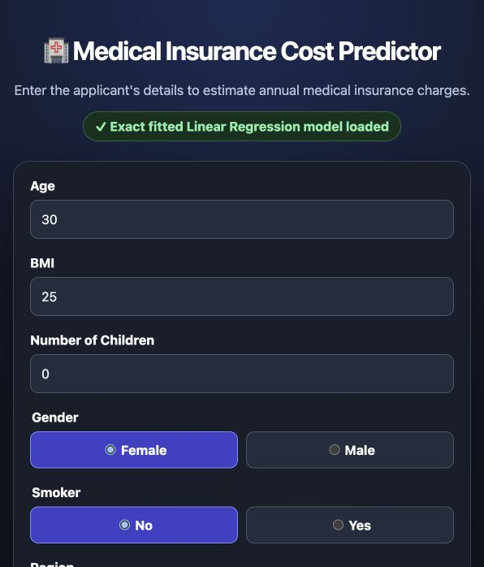
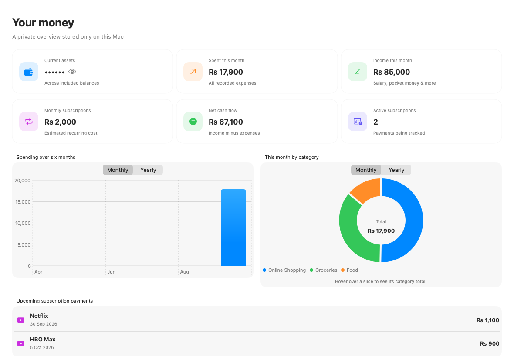
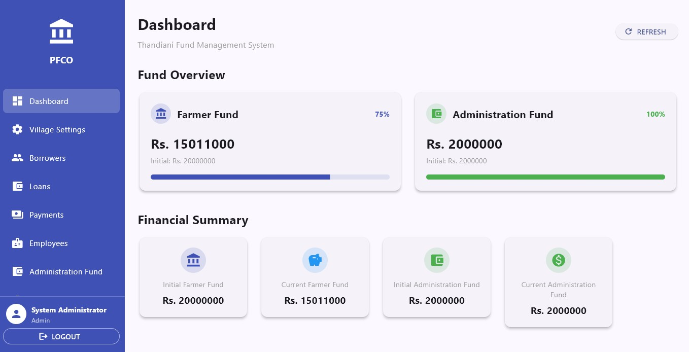
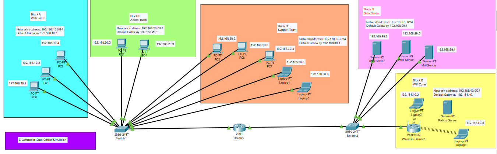

Live model 80.69%test R²Medical Insurance Cost Predictor
An end-to-end linear regression project that moves from a cleaned 1,338-row dataset to a transparent prediction interface and reproducible evaluation.
Lahore, Pakistan · Building in public
I’m Talal Nasir, a computer science student and software developer building privacy-first products, practical AI experiments, and systems made for real use.
01 Selected work
Four projects across applied AI, native products, operational software, and network design.

Live model 80.69%test R²An end-to-end linear regression project that moves from a cleaned 1,338-row dataset to a transparent prediction interface and reproducible evaluation.

Private by designA native macOS finance and subscription tracker with Touch ID, local backups, CSV export, and no server, analytics, advertisements, or internet dependency.

Operational softwareA practical Windows application for borrowers, repayments, expenses, vouchers, reporting, Excel imports, and local backup—designed to replace manual records.

5 network zonesA Cisco Packet Tracer simulation connecting web, admin, support, data-center, and wireless zones with centralized DNS, web, mail, and RADIUS services.
02 Profile
Technical curiosity, practical outcomes, and steady growth across disciplines.

I build across the stack because the problem—not the trend—should decide the tool.
My work moves between applied machine learning, Flutter desktop applications, native macOS software, C++ foundations, and network design. The common thread is simple: understand the system, make deliberate choices, and deliver something useful.
I’m currently studying Computer Science at the University of Management and Technology while continuing to turn coursework, practical needs, and personal ideas into working software.
Full LinkedIn profileComputer Science undergraduate · Lahore
Professional exposure · Lahore
Volunteer work supporting meal service and sustainable community resources.
Udemy · Expanding the product and communication perspective.
03 Toolkit
Offline-first applications, thoughtful flows, local persistence, reporting, and real operating constraints.
From dataset inspection and feature preparation to interpretable models, evaluation, and usable interfaces.
Data structures, object-oriented design, networking fundamentals, and the discipline behind reliable software.
Clear hierarchy, responsive composition, and interfaces that make capable systems easier to understand.
04 Connect
Explore the code, follow the journey, or start a conversation.